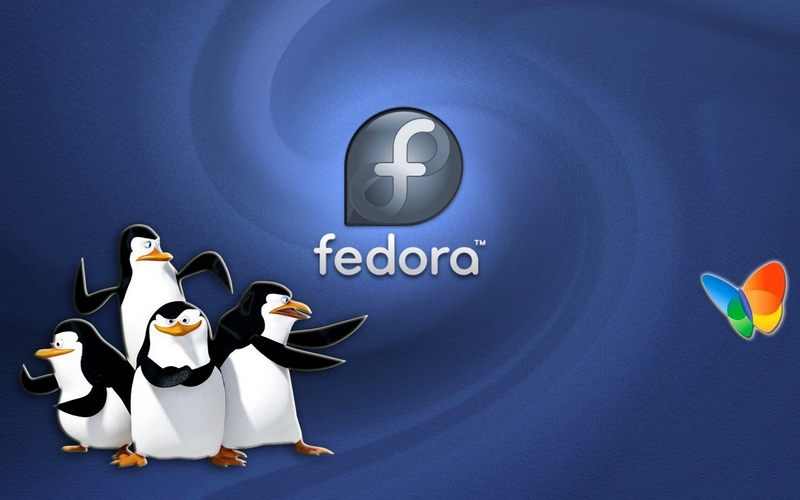

El Proyecto Fedora fue creado a finales del 2004 cuando Red Hat Linux fue descontinuado.6 Red Hat Enterprise Linux (RHEL) continuaría siendo la distribución GNU/Linux oficialmente soportada por Red Hat, mientras que Fedora sería un proyecto comunitario. La rama de liberaciones de RHEL derivan de las versiones de Fedora.
Los Fedora Spins son ediciones oficiales de Fedora que utilizan entornos de escritorio o gestores de ventanas distintos a Fedora Workstation (el cual utiliza GNOME). Estas ediciones implementan los entornos Cinnamon, KDE, LXDE, LXQt, MATE, Xfce, así como el gestor de ventanas i3 y la interfaz gráfica Sugar On A Stick (SoaS).
Fedora Labs es un conjunto de ediciones de Fedora con software preinstalado para un propósito específico, como la astronomía, el diseño, los videojuegos, la robótica, la computación científica, la neurociencia y la seguridad informática.
Es desarrollada, mantenida y distribuida por Red Hat. Tomando las características y herramientas de los dos sistemas y potenciando su uso en esta nueva distribución. De CoreOS principalmente se utiliza la herramienta lgnition, herramienta que principalmente fomenta la infraestructura inmutable y se utiliza para manipular los discos durante el initramfs. Mientras que de Fedora propiamente, toma el sistema de gestión de paquetes rpm-ostree y la incorporación de SELinux para la seguridad.
Fedora Silverblue es una variante de Fedora Workstation. La experiencia es similar a la que se encuentra al usar una estación de trabajo Fedora estándar. Es inmutable, lo cual significa que cada instalación es idéntica a cualquier otra de la misma versión. El sistema operativo es exactamente el mismo de una máquina a otra, y nunca cambia a medida que se usa. Es más estable, menos propenso a errores y más fácil de probar y desarrollar. Además lo convierte en una excelente plataforma para aplicaciones en contenedores.15 No usa el tradicional gestor de paquetes de Fedora DNF sino rpm-ostree y está orientado al uso de paquetes Flatpak, el escritorio es GNOME.